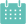
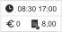
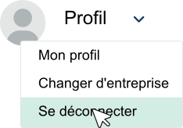

Comment donner un contrat à mon employé ? >
Étape 1
- Cliquez sur l’icône de vos employés
 dans la colonne de gauche
dans la colonne de gauche
- Sélectionnez le nom de l’employé et cliquez à droite sur
Étape 2
- Sélectionnez l’onglet Emploi en haut
- Cliquez sur Créer un Contrat
- Choisissez le type de contrat (long terme, journalier, externe ou intérim)
- Indiquez le type d’employé (étudiant, flexi, extra,…)
- Entrez la date de début de l’emploi (éventuellement une date de fin)
- Cliquez sur Suivant en bas à droite
Comment archiver un employé ? >
- Cliquez sur l’icône de vos employés dans la colonne de gauche
- Tapez le nom de l’employé dans la barre de recherche
- Sélectionnez la flèche vers le bas à droite pour archiver
- Si vous souhaitez réactiver un employé, sélectionnez le bouton en haut à droite
- Vous verrez tous les employés archivés et pouvez les réactiver avec la flèche vers le haut
Ajouter des employés au centre de coûts >
- Cliquez sur Entreprises
 dans la colonne de gauche
dans la colonne de gauche
- Cliquez sur details
- Sélectionnez l’onglet Centre de coût en haut
- Sélectionnez en haut à droite € Ajouter centre de coût
- Remplissez toutes les informations et cliquez sur Sauvegarder
Connexion des employés via téléphone >
Étape 1
- Téléchargez l’application INDII 2.0
 via Apple Store
via Apple Store  ou Google Play
ou Google Play 
- Acceptez toutes les autorisations comme l’accès à la caméra, notifications, etc.
- Ouvrez l’application et entrez vos identifiants de connexion (reçus par e-mail automatique de INDII). Si ce n’est pas le cas, contactez votre employeur. Celui-ci peut vous les renvoyer.
- Attention aux majuscules !
Étape 2
- Via le bouton scan sur le tableau de bord en bas vous pouvez scanner le QR code pour vous enregistrer en entrée et en sortie.
Résumé mensuel & export vers le secrétariat social
>
Lorsque vous importez les employés sur la plateforme de votre secrétariat social, il est très important que chaque employé ait un numéro attribué.
Vous pouvez le faire en accédant au profil de l’employé et en remplissant dans la section
Informations supplémentaires le numéro du secrétariat social.
Étape 1
- Sélectionnez l’icône du bilan mensuel

- Entrez la date de début et de fin (il est important qu’elle commence un lundi)
- Vous devrez peut-être encore Approuver certaines heures de fin des employés (indiquées par un compteur rouge)
- Cliquez sur Chercher pour charger toutes les données
Étape 2
- Via l’icône vous pouvez voir les détails par employé et apporter des modifications aux heures
- Si aucune modification n’est nécessaire, vous pouvez faire une Exportation
- Sélectionnez une date de début et de fin (elle peut commencer le 1er du mois)
- Choisissez entre Exporter En Excel ou un Dossier Pour Le Secrétariat Social
- Le fichier sera téléchargé et vous le trouverez dans vos téléchargements de votre ordinateur
Un employé oublie de s’enregistrer en entrée ou en sortie >
En tant que manager, vous pouvez enregistrer les employés à tout moment.
Option 1
- Allez dans votre planning 
- Sélectionnez le bouton Mois Semaine Jour
- Cliquez sur la barre verte de l’employé
- Cliquez sur Démarrer le planning
Si l’employé a déjà commencé, seul un bouton Stop plan ou Start break apparaîtra
Option 2
- Ouvrez l’application sur votre téléphone
- Appuyez sur le bouton Start/Stop en bas
- Cliquez sur l’icône Play pour démarrer l’employé
- Cliquez sur l’icône Stop pour arrêter l’employé
Créer un nouvel employé >
Option 1
- Allez sur le tableau de bord et sélectionnez Création d'un nouvel employé
- Entrez toutes les informations correctement !
➔ Numéro de registre national avec des points et un tiret
➔ Numéro de compte bancaire avec des points et BE
➔ Trajet domicile-travail sans virgules
➔ Numéro de téléphone avec +32
Option 2
- Allez sur le tableau de bord et sélectionnez Envoyer le lien au nouvel employé
- Envoyez un lien au nouvel employé
- L’employé peut remplir ses informations personnelles à l’avance. Une fois cela fait, vous recevrez un e-mail pour finaliser le contrat.
- Vous pouvez ensuite, via le même bouton (envoyer un lien au nouvel employé), choisir de remplir les étapes suivantes
Travaux de maintenance chez l’administration en ligne >
Les dates des travaux de maintenance peuvent être trouvées sur le site de la Sécurité Sociale.
En tant que dirigeant, vous devez en tenir compte.
Notez donc ces dates dans votre calendrier !
Dans INDII, il existe une option pour envoyer la déclaration à l’avance, ce qui évite d’éventuels problèmes le jour même.
Suivez ces étapes pour envoyer vos déclarations DIMONA avec succès.
- Allez dans votre planning
- Cliquez Envoyer Dimona en haut à droite
- Sélectionnez la date des travaux de maintenance
- Indiquez les employés dont vous souhaitez envoyer la DIMONA
- Cliquez sur Envoyer
➔ La DIMONA est envoyée selon le planning
Créer un planning et/ou ajouter un employé dans le planning >
Étape 1
- Allez dans votre planning
- Sélectionnez un lieu si vous en avez plusieurs
- Sélectionnez le bouton Mois Semaine Jour
- Pour planifier selon les disponibilités, vous pouvez activer le bouton "Indiquez vos disponibilités"
Étape 2
- Sélectionnez dans la première colonne via le + pour obtenir un menu déroulant afin de choisir vos employés
- Choisissez un employé dans la liste
- Cliquez sur une case vide
- Une pop-up apparaîtra
- Vous pouvez maintenant entrer l’heure de début et de fin
- Si vous souhaitez planifier plusieurs jours avec les mêmes heures, vous pouvez cocher "Sélectionner pour plusieurs jours"
Comment renvoyer les identifiants de connexion de mon employé ? >
- Cliquez sur l’icône de vos employés dans la colonne de gauche
- Sélectionnez le nom de l’employé et cliquez à droite sur
- Cliquez sur l’icône à droite et choisisez "Renvoyer les données d'accès"
- L’employé peut réinitialiser son mot de passe automatiquement via l’application
- Le nom d’utilisateur est toujours le prénom et le nom (sans majuscules)
Ajouter des absences dans le planning >
Option 1 : via la plateforme
- Allez dans votre planning
- Cliquez sur un jour où un employé est planifié 
- Appuyez sur l’icône de la porte

- Sélectionnez le code d’absence et ajoutez éventuellement une raison
Option 2 : via l'Appli
- Allez dans le planning via le tableau de bord
- Cliquez sur l’icône de la porte à côté du nom de l’employé
- Entrez les informations d’absence et appuyez sur "Ajouter l'absence"
Modifier les informations personnelles de mes employés >
Option 1 : via la plateforme
- Allez dans votre planning
- Cliquez sur un jour où un employé est planifié
- Appuyez sur l’icône de la porte
- Sélectionnez le code d’absence et ajoutez éventuellement une raison
Option 2 : via l'Appli
- Allez dans le planning via le tableau de bord
- Cliquez sur l’icône de la porte à côté du nom de l’employé
- Entrez les informations d’absence et appuyez sur "Ajouter l'absence"
Où puis-je trouver les disponibilités de mes employés ? >
Option 1 : via la plateforme
- Allez dans votre planning
- Si vos employés sont ajoutés au centre de coûts, vous pouvez indiquer les disponibilités via ce bouton
- Vous pouvez également voir qui est disponible chaque jour via l’icône en haut à droite de votre planning
- Vous pouvez filtrer par disponibilité, ceux qui sont disponibles apparaîtront en premier dans la liste
- Via le bouton d’action vous pouvez les ajouter directement au planning
Option 2 : via l'Appli
- Allez vers vos employés en bas de l’application
- Cliquez sur le nom de l’employé
- Sélectionnez l’onglet "Disponibilité"
Comment activer mon appareil ? >
- Connectez-vous avec votre nom d’utilisateur et mot de passe via apps.indii.be
- Cliquez sur la tuile "Activer cet appareil" sur le tableau de bord
- Si vous sélectionnez l’entreprise, tous les lieus seront activés pour cet appareil. Vous pouvez également sélectionner par emplacement
Où puis-je trouver mon code QR ? >
Étape 1
- Activez votre appareil (voir "Comment activer mon appareil ?")
Étape 2
- Déconnectez-vous en haut à droite 
- Vous verrez maintenant le code QR en grand
- Cliquez en haut à droite sur pour rendre l’horaire disponible
Comment créer un horaire fixe ? >
- Allez dans votre planning
- Cliquez sur l’onglet Horaire fixe en haut
- Sélectionnez à droite Créer Un Horaire Fixe
- Remplissez toutes les informations nécessaires
- Faites défiler vers le bas et cliquez sur Sauvegarder
Comment désigner mon responsable ? >
- Cliquez sur l’icône de vos employés dans la colonne de gauche
- Sélectionnez le nom de l’employé et cliquez à droite sur
- Sélectionnez l’onglet Autorisations
- Sélectionnez le rôle souhaité
Où puis-je modifier les paramètres de l’enregistrement du temps ? >
- Cliquez sur "Entreprises" dans la colonne de gauche
- Cliquez sur l’icône
- Sélectionnez l’onglet Paramètres
➔ Seul l’administrateur a les autorisations pour cela !
Où puis-je consulter les contrats des employés ? >
- Cliquez sur l’icône de vos employés dans la colonne de gauche
- Sélectionnez le nom de l’employé et cliquez à droite sur
- Sélectionnez l’onglet Documents
- Cliquez sur l’icône pour les consulter
Consulter et/ou modifier les règles de votre entreprise >
- Cliquez sur "Entreprises" dans la colonne de gauche
- Cliquez sur l’icône
- Sélectionnez l’onglet Autorisations
- Sélectionnez le rôle souhaité
Comment désigner mon responsable ? >
- Cliquez sur l’icône de vos employés dans la colonne de gauche
- Sélectionnez le nom de l’employé et cliquez à droite sur
- Sélectionnez l’onglet Règles
- Sélectionnez le type de règle que vous souhaitez consulter
- Cliquez sur le crayon pour apporter des modifications
- Décochez la valeur par défaut et entrez votre propre valeur
Approuver les heures de fin des employés >
Si vos employés oublient de s’enregistrer en sortie et doivent travailler le lendemain, ils peuvent entrer une heure de fin pour pouvoir scanner et commencer à travailler.
En tant que manager, vous pouvez approuver cette heure en suivant ces étapes.
- Sélectionnez le Bilan mensuel dans la colonne de gauche
- Vous verrez un compteur si une action est nécessaire
- Vous pouvez ajuster l’heure de fin via le crayon ou la confirmer via la coche verte
Où puis-je vérifier mes déclarations DIMONA ? >
- Sélectionnez la tuile "DIMONA" sur votre tableau de bord
- Entrez une date
- Sélectionnez le bouton pour voir les détails